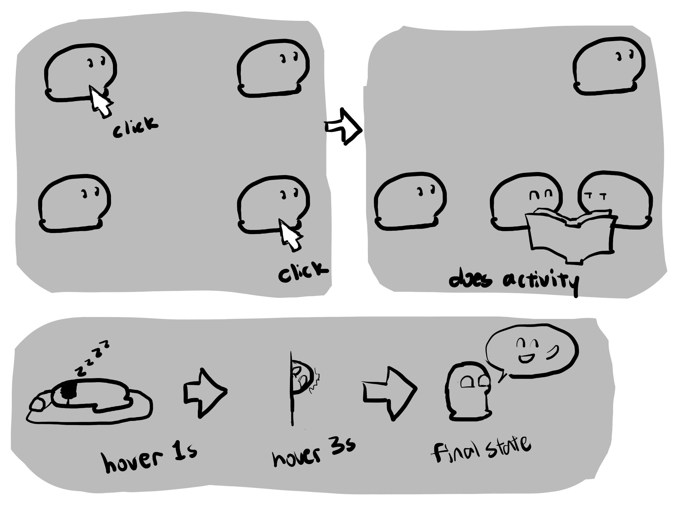
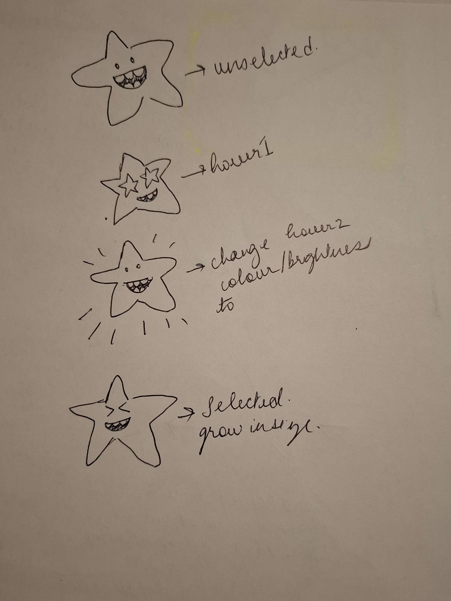
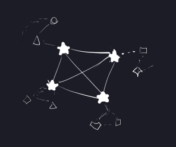

Star Constellation is an interactive portrait of our team, where each member is represented by a star. We wanted each star to express its owner’s personality through its behaviour and appearance. The constellation theme brought us into one shared world, allowing visitors to discover both our individuality and the connections between us.Selecting a star reveals hobby icons, while connecting lines and highlighted shared interests show what we have in common. Personal colours and animated expressions give each star its own identity, and different hover response times reflect how quickly each person responds to social attention. Selecting a star also lights up background stars in that member’s favourite colour, letting our personalities collectively shape the sky. A sun and moon introduce another playful way to explore our differences. Dragging a star onto either triggers an animation reflecting whether that member is a morning or night person. Through these interactions, we explored how a button could feel like a person—expressing their interests, habits, and relationships through movement, timing, and visual feedback.



01 / Process
Ideation Process
Our ideation began with individual sketches and group discussions about how a button could represent a person through its behaviour. An early concept used animated blobs that reacted to hovering and performed a shared activity when paired. We explored these interactions through storyboards and used Claude to brainstorm additional directions. We then chose a constellation because it gave each member an individual identity while making relationships between us visible. Each star could express personality through colour, expressions, and hover timing, while connecting lines and hobby icons revealed shared interests. This allowed us to represent both who we are individually and how we connect as a team.
02 / Tools
Tools, Collaboration & Assets
Tech stack: HTML, CSS, and JavaScript were used to build the interactive website, with Figma for prototyping and GitHub for version control and collaboration.
Communication and documentation: We coordinated through Discord, collaborated on the project write-up in Google Docs, and used Zoom for video meetings.
Visual assets: The star characters and their animation frames were hand-drawn to express each member’s personality. The sun and moon assets were AI-generated.